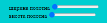
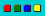

-  - обираємо розмір холста.Збільшити або зменшити фон для розмальовки неможливо, якщо Ви щось намалювали та раптом захотіли збільшити або зменшити холст все зітреться!
- - обираємо чим будемо малювати.
-  - обираємо колір для малювання.
- - обираємо фон для розмальовки.
- - Для малювання натискаємо Ліву Кнопку Миши(ЛКМ).
- - Для стирання намальованного натискаємо Праву Кнопку Миши(ПКМ) та використовуємо як звичайний ластик.
- - при натисканні на корзинку наш холст повністю очищується.